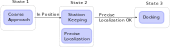

Action State Machines
- Concept
- Declaration
- States and transitions
- Parameters
- Using Dynamic Data - Captures
- Dynamic State Machine Creation
- Testing
We have seen so far a way for tasks to emit events. That is, "export" synchronization points on top of which one can build. The action state machines is a powerful primitive that allows to combine actions temporally, leveraging the events to do so.
Concept
While they are called "state machines", the action state machines are between "pure" state machines and what has recently appeared in the ROS community under the "behavior tree" name. Which also had the name of HTNs before.
In an action state machine, a "state" is a combination of Syskit actions. Actions in this case can either be behaviours defined as Syskit definitions, action methods or other action state machines. Syskit will ensure that the set of actions associated with a state runs when that state is active, and only one state may be active at any given time (in a given action state machine … multiple state machines can run in parallel).
As an example, let's use a hypothetical docking maneuver. Medium range, the maneuver would use an approach that uses a global localization mechanism. When getting close, the system has to switch to a more precise system. The general behavior will be to
- approach
- stay in position until the more precise localization system is running and working
- switch to the final docking maneuver

Declaration
Action state machines are declared in an action interface using
the action_state_machine statement. As for action methods, they must be preceded by
a "describe" statement that declares what the action does.
module MyApp
module Actions
class Navigation < Roby::Actions::Interface
action_state_machine "docking" do
end
end
end
end
States and transitions
A machine's state is based on a single action. Assuming that our docking's
sequence coarse approach is a single profile definition called docking_coarse_approach,
we would do
action_state_machine "docking" do
coarse = state docking_coarse_approach_def
end
You must convert an action into a state object using the state statement,
because the same action can be the basis of two different states (which would
allow having different in/out transitions)
If we now assume that the station keeping and final approach actions are
station_keep_def and final_approach_def, we would define our three main
states with the following snippet. We also tell Syskit which state is the machine's
start state:
action_state_machine "docking" do
coarse = state docking_coarse_approach_def
station = state station_keep_def
final = state docking_final_approach_def
start(coarse)
end
Let's now assume we have defined a reached_position event on the
docking_coarse_approach_def action. This event can be the basis of the transition
between coarse and station:
action_state_machine "docking" do
coarse = state docking_coarse_approach_def
station = state station_keep_def
final = state docking_final_approach_def
start coarse
transition coarse.reached_position_event, station
end
The reached_position event should not be a terminal event for
docking_coarse_approach, i.e. it should not be terminating the task. Syskit is
far from being a realtime engine, so each action should have a "stable" end
state. In this case, I would design coarse_approach to actually hover at the
target point. It may make the station state useless unless station_keep does
it better. We will see how we could do without the station keep action later.
Now, during the station state, we want to run the localization method that
will be used during the final approach, and make sure it works before we go
for the final approach (for instance, that it found visual markers). Such combination
of actions in a state is a staple of the actions state machines:
action_state_machine "docking" do
coarse = state docking_coarse_approach_def
station = state station_keep_def
localization = state visual_localization_def
final = state docking_final_approach_def
start coarse
transition coarse.reached_position_event, station
end
However, visual_localization_def should be running the localization, but won't
be providing us with the events we need for our synchronization. It is common to
build a library of tiny steps for this. In this case, we would create a
validate_visual_localization action that would run the action and emit success
once the visual location has a hit. We can then use the success event for our
purposes
action_state_machine "docking" do
coarse = state docking_coarse_approach_def
station = state station_keep_def
# States can be made of any action, not only of profile definitions.
# Here `validate_visual_localization` is built on top of the
# visual_localizations_def (see paragraph above)
validate = state validate_visual_localization
station.depends_on(validate)
final = state docking_final_approach_def
start coarse
# Since reached_position_event is an event of a state, you do not need
# to specify the state, i.e. the following is equivalent to
# transition coarse, coarse.reached_position_event, station
transition coarse.reached_position_event, station
transition station, validate.success_event, final
end
Because of how Syskit handles transitions, the visual localization network will remain unchanged between the station and final states.
Finally, we would build the final_approach_def action to emit success when docked,
which would become the success criteria for the state machine itself:
action_state_machine "docking" do
coarse = state docking_coarse_approach_def
station = state station_keep_def
validate = state validate_visual_localization
station.depends_on(validate)
final = state docking_final_approach_def
start coarse
transition coarse.reached_position_event, station
transition station, station.validate_child.success_event, final
final.success_event.forward_to success_event
end
Parameters
The action state machine may take arguments of its own. They are declared the same way
than with action methods, that is using the
required_arg and optional_arg statements to describe. The arguments are then
made available with _arg accessors and can thus be used as arguments to the underlying
actions.
As an example, let's assume we want to parametrize the target point for the coarse
and station states:
describe("action that docks")
.required_arg(:target, "the target point as { x:, y:, z: } object")
action_state_machine "docking" do
coarse = state docking_coarse_approach_def(target: target_arg)
station = state station_keep_def(point: target_arg)
validate = state validate_visual_localization
station.depends_on(validate)
final = state docking_final_approach_def
start(coarse)
transition coarse.reached_position_event, station
transition station, station.validate_child.success_event, final
final.success_event.forward_to success_event
end
Using Dynamic Data - Captures
It is sometimes useful to get information passed from one action to another. This is done through a combination of event and arguments. I.e. the action state machines provide you with the means to 'read' data associated with an event and use it to compute another state's argument.
Indeed, tasks, when emitting events, may "attach" an object to them (the "event context"), e.g.
success_event.emit(some_data)
In action state machines, the event's context can be captured and transformed into
another state's argument with the capture statement:
c = capture(my_state.success_event) do |event|
data = event.context.first # 'context' is an array
... convert `data` into something usable as an argument ...
end
state some_action(target: c)
As an example, let's assume we want to use a generic line follower to go from the current system position to the coarse approach target. We would read the current system position first and then transition to the line follower:
describe("action that docks")
.required_arg(:target, "the target point as { x:, y:, z: } object")
action_state_machine "docking" do
acquire_pose = state acquire_pose_def
# the state must have been passed to `start` or as a state
# in `transition` before it can be used in `capture`
start(acquire_pose)
from = capture(acquire_pose.success_event) do |pose|
p = pose.position
{ x: p.x, y: p.y, z: p.z }
end
coarse = state follow_line(from: from, to: target_arg)
station = state station_keep_def(point: target_arg)
validate = state validate_visual_localization
station.depends_on(validate)
final = state docking_final_approach_def
transition acquire_pose.success_event, coarse
transition coarse.reached_target_event, station
transition station, validate.success_event, final
final.success_event.forward_to success_event
end
If repeated, the "go there using a line from the current position" can be factored in a separate action state machine, using the state machine's support to get custom events:
describe("go to a target following a line from the current position")
.required_arg(:to, "the target point as { x:, y:, z: } object")
action_state_machine "follow_line_from_here" do
acquire_pose = state acquire_pose_def
from = capture(acquire_pose.success_event) do |pose|
p = pose.position
{ x: p.x, y: p.y, z: p.z }
end
line = state follow_line(from: from, to: target_arg)
start acquire_pose
transition acquire_pose.success_event, line
event :reached_target
line.reached_target_event reached_target_event
end
describe("action that docks")
.required_arg(:target, "the target point as { x:, y:, z: } object")
action_state_machine "docking" do
coarse = state follow_line_from_here(to: target_arg)
station = state station_keep_def(point: target_arg)
validate = state validate_visual_localization
station.depends_on(validate)
final = state docking_final_approach_def
start coarse
transition coarse.reached_target_event, station
transition station, validate.success_event, final
final.success_event.forward_to success_event
end
The Acquire functor
bundles/common_models defines the Acquire "functor" that creates a composition
suitable to follow the "acquire data and pass it to success" pattern. Acquire takes
a component model and will emit success once it received data on all of its ports.
For instance, one use the following definition to read the global pose:
define "acquire_global_pose",
CommonModels::Compositions.Acquire(Services::Pose)
.use("data_source" => global_pose_def)
Dynamic State Machine Creation
State machines can be defined at toplevel, the way we just saw, but may also be defined dynamically in an action method. When doing so, one has to first define a root task and attach the machine to that task. For instance,
root_task = MyActionMethodRoot.new
action_state_machine root_task do
end
root_task
The action_state_machine block behaves the same than in "toplevel" state
machines, but has access to instance methods and action method arguments
directly.
Testing
State machines defined at toplevel are evaluated at loading time, and the presence of actions and events is validated at loading time as well.
Therefore, there are only mainly two points that are needed to test in relation with action state machines:
- captures
- dynamically generated state machines
Captures
In the action interface's test suite, create the state machine's task instance
and then use run_state_machine_capture to execute the capture:
task = run_planners my_action(x: 5, y: 10)
result = run_state_machine_capture task, "capture_name", context: [42]
In the rare occasion that the capture would need some more information from the
event, pass a full Roby::Event as the event argument instead of context
Dynamically Created State Machines
To test that a state machine was properly generated, create the toplevel task and
then use the validate_state_machine helper to get into a context that allows
you to "play" with the machine's state tasks:
it "transitions to 'coarse' once the pose is acquired" do
interface = MyInterface.new
root_task = interface.some_action
validate_state_machine root_task do
# The start sate is available as `current_state_task`. It is ready to
# start, but is unstarted. If you need to read/write ports, you will
# have to call syskit_configure_and_start(current_state_task)
next_task = assert_transitions_to_state(:state_name) do |current_task|
# Act on 'current_task' using the normal test primitives, e.g.
# syskit_configure_and_start, expect_execution, ...
end
# next_task here is the new state's toplevel task. It is ready to start,
# but is unstarted. Call syskit_configure_and_start for a Syskit task,
# or execute { next_task.start! } for a plain Roby task.
end
end
Do not get into the trap of testing the states themselves, the "test space" will get very big very quickly. The point of these tests is to check the state machine's own structure. Test each state's implementation in separate unit tests.